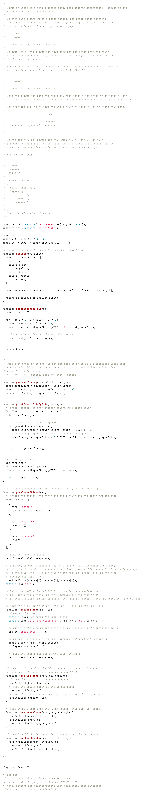

You are not registered and cannot track your progress
This page has code examples for you to try out. In this stage, we add functions and one more external package.
Typing code helps you learn, so rather than giving you text to copy and paste the code is an image that you must read, hold in your mind, type in to your editor and then manually check for accuracy.
When we type, we make mistakes and that's OK – finding what we've done wrong is part of programming so this is a useful experience.
Always test your program with a few different inputs to see that it behaves as expected.
As always, we encourage your feedback on the process and the examples.
Prime numbers are positive integers only divisible by 1 and themselves, and no other integers. 4 is not a prime because it is 2*2; 5 is a prime.
If we have an array [1, 2, 3] and we reverse it, we should get
[3, 2, 1].
A word is a palindrome if it reads the same forwards and backwards, e.g.
racecar. We reuse the reverseArray() function to reverse a
string.
Can you change the program so that an empty string is not reported as a palindrome?
Create a simple diceRoll() function to simulate a roll of a
single dice. We will use it later.
Let's see if the dice favour some number.
Let's see if the dice favour some number, this time as a nice graph.
Instead of rolling just one dice, can you change the program to roll two dice at a time? We should see that 2 (=1+1) and 12 (=6+6) are the least common results.
Just for fun, draw a word tower of characters.
Add a splash of colour. Note that much of this program is similar to the previous one; there are comments where the same code starts and where it starts to differ again.
To draw several towers side-by-side so their bottoms align, we need to find out how high the tallest tower is, and then print empty layers above the shorter towers.
Note that much of this program is similar to the previous one; there are comments where the same code starts and where it starts to differ again.
The code that splits the input into words, and creates tower descriptions
for each word, is intentionally advanced. Try to rewrite the
split() and the map() lines using loops.
We use the ideas from the examples above to make a program that plays the Tower of Hanoi puzzle.
You don't have to type the huge block comment at the beginning unless you want to practice typing.
The program solves the puzzle itself, but we could let the user play it. Can you make an interactive version that would keep asking the user for a single move, do the move, and stop when the tower is completely moved?
The code above can only solve towers of height 4, and fails with larger or
smaller towers. Functions like moveTwoBlocks quickly become
repetitive; we just know that computers can do better.
This program solves the puzzle recursively – by having a function
moveBlocks that calls itself to do a part of its task.
Well done getting all the way through, thank you! Let us know how you like these examples.